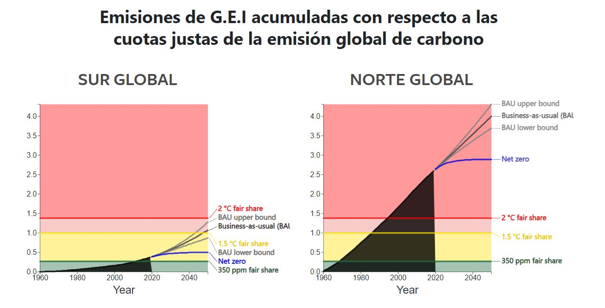
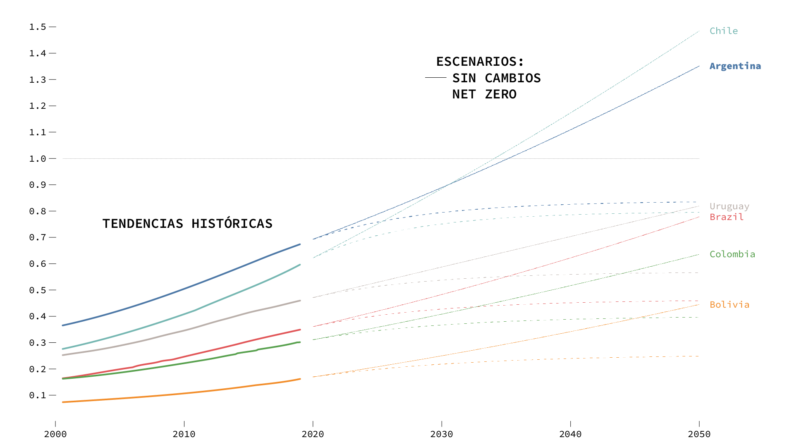

El norte global viene emitiendo muchos mas Gases de Efecto Invernadero que el sur global
 Fanning, A.L. and Hickel, J. (2023). Compensation for atmospheric appropriation.tampoco son iguales los esfuerzos necesarios para reducir las emisiones de GEI
